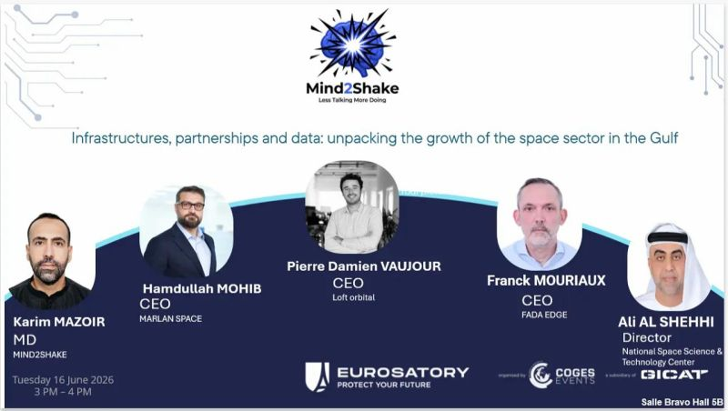
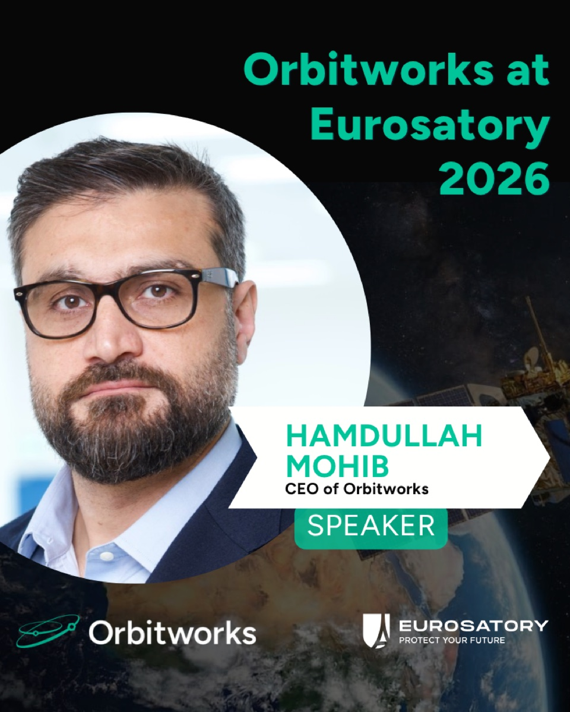
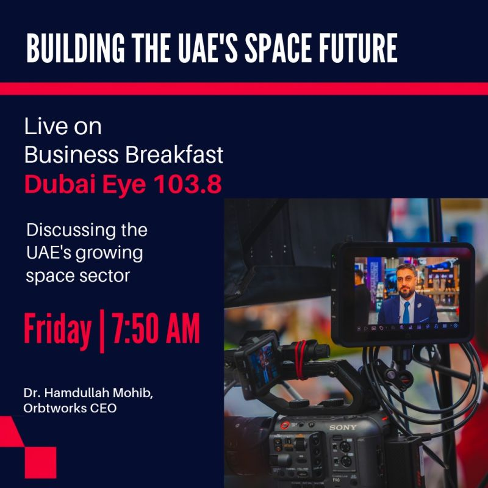
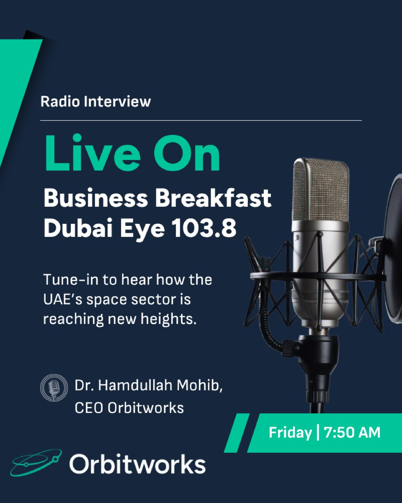
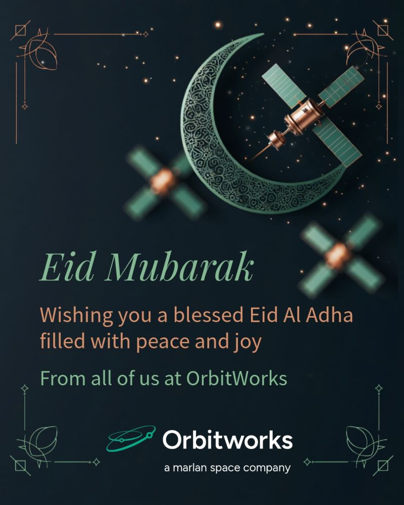
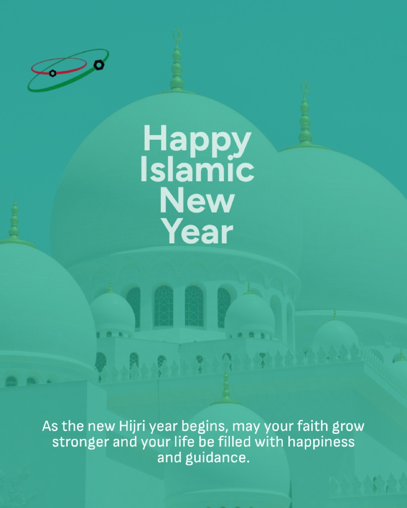
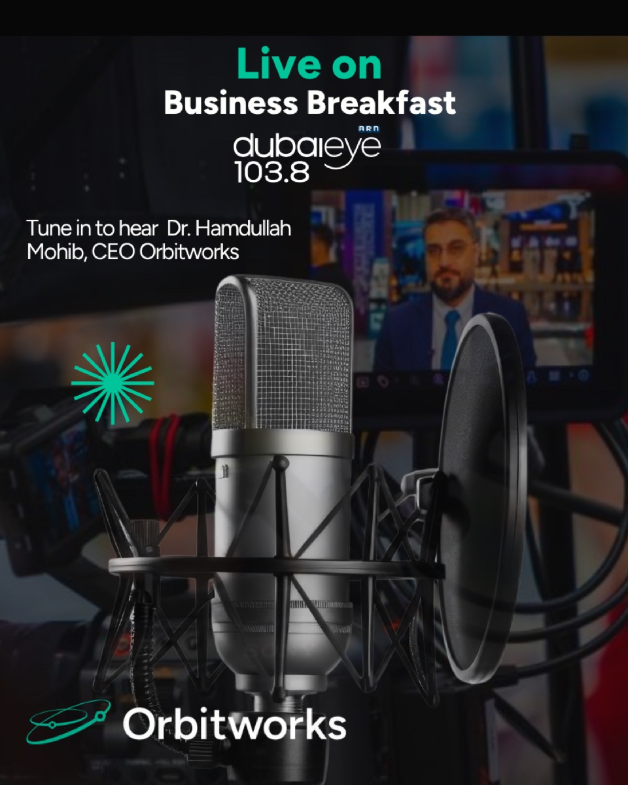

Orbitworks
A speculative social redesign: three of the brand's own posts rebuilt against one disciplined visual system, to show what a consistent, ownable presence could look like.
The challenge
Orbitworks is doing something the region has never done before. It is manufacturing satellites in Abu Dhabi, building sovereign space capability for the UAE and exporting it to nations around the world. The story writes itself.
But scrolling their social feed, none of it was showing up. Each post looked like it came from a different company: inconsistent colours, mismatched type, event graphics that weren't branded at all. The visual system existed, but it just wasn't being applied.
So I asked a simple question: what if these posts actually looked like they came from the same brand? I rebuilt three of their creatives against a single visual system, one palette, one type pairing, one logo treatment, to show what a consistent, ownable presence could look like.
Three posts, one switch
The originals as they ran, and the same three posts rebuilt. Flip between them.


Speaker reveal

Radio interview

Festive wishesFour rules, applied every time
Nothing here was invented. The palette, the type and the logo already existed; the redesign only holds every post to them.
One dark ground, one accent. No reds, no gradients, no borrowed event colours.
A geometric sans, bold for the one line that matters, regular for everything else.
Names, titles and times sit in an angled tag. It is the one shape the brand can own across every post.
HAMDULLAH MOHIBCEO of OrbitworksThe white wordmark with the orbit mark, bottom left, on every post. Partners sit opposite, never on top.
OrbitworksEurosatory 2026 speaker reveal
The original wasn't an Orbitworks asset at all. It was the event organiser's panel template, with five headshots dropped in and the company inaccurately represented. A speaking slot at a global defence exhibition is a milestone; it deserves an asset the brand actually owns.
The CEO against a satellite-over-Earth still, with the name and title locked into a chevron in deep black and Orbitworks teal. The Eurosatory logo stays in frame: co-branding borrows the exhibition's credibility and signals scale, while the brand's own colour, type and logo keep the moment Orbitworks.
Radio interview announcement
The same principle applied to an on-air appearance: an announcement rebuilt so it reads as Orbitworks from a distance and in the feed, rather than as a generic media graphic. Two passes: a first iteration that set the on-brand direction, then a second that tightened the hierarchy, the type and the chevron detailing.

Festive wishes
Festival greetings are easy to over-decorate and easy to treat as throwaway one-offs, which is exactly why they drift off-brand. The original leaned on dense, ornate embellishment. The redesign takes the opposite approach: one focus, clear hierarchy, room to breathe, so the message reads instantly in the feed. The same warmth, far less noise. Drag the handle.
Drag left and right to compare.
What the rebuild showed
- A visual system only works when it is applied. The brand already had a palette, a typeface and a logo; the feed just wasn't using them.
- Held to the same rules, posts stop being scattered one-offs and start compounding into something people recognise before they read the name.
- Co-branding is fine when the host stays the host. Keep the partner's logo, keep your colour, type and corner.